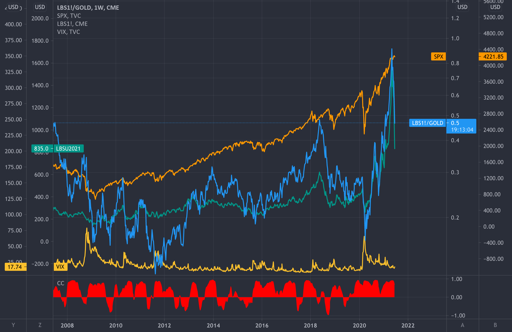

Juin 16, 2022
In this project, we use SQL to do some Data Exploration on the COVID19 data set available on https://ourworldindata.org/coronavirus, with the aim of building some
excel tables that should be latter used on Tableau for visualisation. I realise this project after listening the youtube video of Alex Freberg.


This project focuses on the analysis and the modelisation of the financial time series of the CAC40 returns stock price using python environment. Our analysis is realized in three main parts. We start the first part by a preliminary analysis of the daily closing stock prices and returns of CAC40. The stationarity of the return series is also investigated. The second part intends to fit an appropriate ARMA-GARCH model to the log-returns stock prices of the CAC40 and the last part focuses on using fitted model to predict future returns and prices of the CAC40 stock.

Our main concern in this project are stationary time series without trend and without seasonal component. We are interested on the analysis and the prediction of futures values of such time series. In this project, we follows all the step needed for modelling and forecasting stationary time series. Basically, given an observed time series of length $n$, we are looking for an ARMA(p,q) model process which is more sparse/parsimonious, which correctly adjust the data and has the best prediction ability. We start with a visual analysis of the data. Based on the empirical values of the (partial) autocorrelation function $\gamma_X(h)$ and $\alpha_X(h)$, we choose which values of the parameters $p$ and $q$ should be considered in our analysis. Next, the automatic AIC selection criterion is used to select the best `AR(p)` models fitted using the function `arima()`. Another selected criterion like FPE and BIC are used here in order to check whether the later best fited model is recovered. In the validation step, we test whether our models are correctly adjusted and we used a one-ahead prediction to predict the last 20% percent of the observed time series. This allows us to compute the prediction error and to select the model with the best prediction ability. We predict the next 10 values of the series and construct the prediction together with the prediction interval.
This are some visualizations of my Tableau projects.
Le système de chômage en Belgique est souvent présenté comme l’un des plus protecteurs en Europe. Basé sur une logique de solidarité collective, il offre une sécurité aux personnes privées d’emploi tout en misant sur leur réinsertion. Toutefois, la situation actuelle — notamment le nombre élevé de chômeurs de longue durée — interroge sur sa viabilité. Le nouveau gouvernement ARIZONA propose une réforme radicale qui vise à exclure les chômeurs de longue durée. Une mesure qui suscite de vifs débats, car elle pourrait précipiter une partie de la population déjà vulnérable dans une précarité plus grande encore.
Dans cet article qui constitue une introduction et une première dans une série d’articles plus détaillées qui suivra, nous décryptons le modèle actuel, les motifs politiques et économiques de la réforme, les risques qu’elle comporte et enfin, nous vous proposons un modèle alternatif inédit, combinant insertion, coaching personnalisé et logique gagnant-gagnant pour les entreprises comme pour les chercheurs d’emploi.